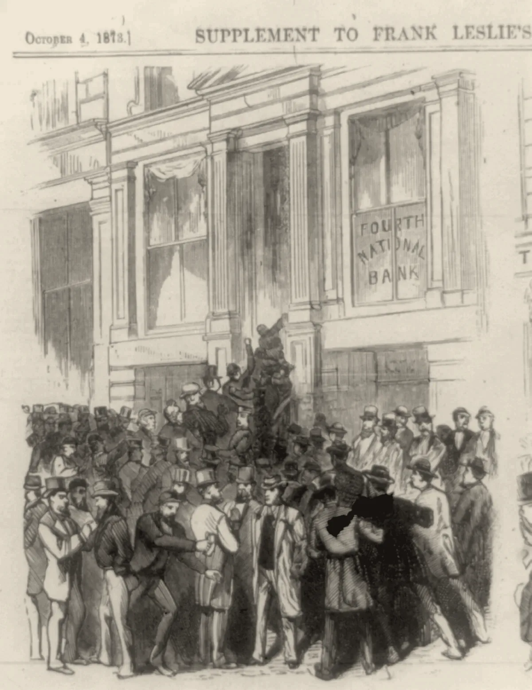

· Edición 1 · 5 min de lectura
Colombia se acerca a un límite de deuda sin vuelta atrás
Revisada el · 1 corrección posteriores a la publicación

Grabado anónimo en Frank Leslie's Illustrated Newspaper, 1873 · Dominio público, vía Wikimedia Commons
Colombia se acerca a un límite de deuda sin vuelta atrás
En pocas palabras. Colombia se acerca a un límite de deuda del que no se puede volver. Si lo cruza, podría no alcanzar a pagar lo que debe. Se propuso cobrar solo cuatro impuestos, pero nadie ha calculado cuánto recaudarían.
Qué pasó. Lo advirtió el Comité Autónomo de la Regla Fiscal, los expertos que vigilan que el Gobierno no se endeude más de lo que puede pagar.
El aviso llega en mal momento. El Gobierno ya le sumó más de medio billón de pesos al presupuesto de 2026 por el terremoto del 10 de agosto.
Qué nos dice. El gasto del Estado es rígido: un solo terremoto basta para prender las alarmas.
Por qué no se arregla.
- Subir impuestos cuesta apoyo político. Y recortar gastos choca con pagos obligatorios.
- Hay quien gana con que nada cambie: los que tienen exenciones para pagar menos. Nadie ha querido revisarlas.
Reconstrucción rápida frente a control
En pocas palabras. Para reconstruir rápido tras el terremoto, el Gobierno permitió contratar con menos trámites. Menos trámites también es menos control sobre la plata. Un tablero público de contratos ayudaría a vigilarla.
Qué pasó. Un decreto fijó reglas especiales de contratación. Esa semana, la revista CAMBIO reveló el expediente de la Corte Suprema contra el senador Didier Lobo, por un contrato de nutrición con presuntos sobrecostos.
Qué nos dice. Con la casa inundada, nadie pide tres cotizaciones: llama al primer plomero, aunque le cobre de más.
Por qué no se arregla.
- Se piden menos requisitos justo cuando hay más plata y más afán.
- Los datos de los contratos existen, pero en un formato que el público no entiende.
Una idea. Un tablero con datos abiertos que siga cada contrato y compare sus precios con los del mercado. Tiene cruce directo con Mattriz.
El Caribe sigue en riesgo de apagón
En pocas palabras. Hace dos años el Estado intervino Air-e, la empresa que lleva la luz a buena parte del Caribe. Los problemas siguen, y la región sigue en riesgo de apagón. Cambiar de administrador no basta si el negocio no se sostiene.
Qué pasó. Air-e cambia todo el tiempo de interventor y debe billones de pesos.
Un estudio calculó que un racionamiento como el de 1992, con cortes de luz por turnos, costaría hoy más de 30 billones de pesos.
Por qué no se arregla.
- La tarifa no se puede pagar. Subirla cuesta apoyo político, y los subsidios llegan tarde.
- Robar luz se volvió normal.
Para pensar. En el Caribe sobra el sol. ¿Qué impide que comunidades y comercios produzcan su propia energía solar?
Ecuador: se retiró la licencia, pero la concesión sigue vigente
En pocas palabras. En Ecuador, un proyecto minero en un páramo perdió su permiso ambiental, pero conserva el derecho a explotar la zona. El caso se parece al de Santurbán, en Colombia. La empresa puede esperar a que llegue un gobierno más favorable.
Qué pasó. Más de 50.000 personas marcharon en Cuenca para defender los páramos.
El proyecto Loma Larga, de la canadiense Dundee Precious Metals, recibió la licencia ambiental en junio de 2025. El Gobierno se la retiró en octubre. La concesión sigue vigente.
Según los organizadores de la marcha, unas 46.000 hectáreas de páramo están en concesión. En julio se firmó un tratado de libre comercio con Canadá.
Por qué no se arregla.
- Cancelar sale caro: las empresas pueden demandar al Estado ante tribunales internacionales de arbitraje.
- El Estado necesita plata. Y el agua del páramo no paga regalías.
Para pensar. El oro tiene precio en la bolsa; el agua solo tiene a quien marche por ella. ¿Cómo se le pone valor?
IA, matemáticas y quién se queda con el crédito
Conflicto de interés declarado: uno de los matemáticos involucrados trabaja en Anthropic, la empresa que creó a Claude.
En pocas palabras. OpenAI dice que resolvió un gran problema de las matemáticas con miles de programas de inteligencia artificial. Dos matemáticos que llevaban un año en él dicen que les tomaron la delantera. La pregunta es quién se queda con el crédito cuando gana el que más puede gastar.
Qué pasó. Tristan Buckmaster y Levent Alpöge llevaban cerca de un año en el problema de Navier-Stokes, uno de los siete Problemas del Milenio. Dicen que OpenAI conoció su trabajo y se apuró para ganarles.
OpenAI dice que usó 10.000 agentes de inteligencia artificial. El esfuerzo habría costado unos 22,5 millones de dólares en computadores.
Peter Scholze lo llamó relaciones públicas. Jacob Tsimerman, que entró a OpenAI en julio, defendió el logro. La prueba no ha sido revisada formalmente.
Por qué no se arregla. Los laboratorios pueden gastar decenas de millones para adelantarse a quienes empezaron el trabajo, y ninguna norma lo impide.
Asombro
Las partes delantera y trasera del cerebro tendrían orígenes distintos. Un estudio de Stanford, en Nature Neuroscience, encontró que vienen de tipos de célula distintos, en un patrón de hace más de 550 millones de años. Gracias al hallazgo se cultivaron, por primera vez, neuronas auténticas de la parte trasera del cerebro humano.
Un cráter de 390 millones de años, encontrado al buscar dónde acampar. En 2024, Joël Lapointe preparaba un campamento en Quebec y vio en mapas satelitales un círculo cerca del lago Marsal. La expedición halló conos de impacto y roca fundida.
El planeta más joven confirmado hasta ahora. Elias 2-24 b, del tamaño de Júpiter, tiene menos de un millón de años.
Ver lo que vio un ratón. Investigadores reconstruyeron pedazos de video de 10 segundos a partir de la actividad de la corteza visual de ratones.
La paradoja del día
Lo más absurdo de la edición, en dos líneas
En Ecuador, a un proyecto minero en el páramo le quitaron la licencia y le dejaron la concesión. Es como cancelar una obra y dejarle al constructor las llaves del terreno, por si cambia el dueño de la casa.
Seguimiento de la decisión
Pendiente · sin fecha fija
Corte Suprema: Decidir el proceso contra el senador Didier Lobo por un contrato de nutrición con presuntos sobrecostos.
Correcciones
Datos corregidos después de publicar; cada corrección lleva su fecha.
Corrección ·
Reescribimos la edición en un lenguaje más sencillo, con frases cortas y ejemplos cotidianos. Los datos y las fuentes son los mismos.